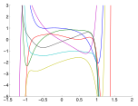

05 Gaussian Process 2
Advanced Machine Learning
Malte Schilling, Neuroinformatics Group, Bielefeld University
Goals for Today
Understanding …
- Probability Distribution for Parameters
- and how this induces probability distributions over functions.
- Gaussian Processes as an (infinite) Collection of random variables
- and doing tractable inference on a finite subset that is Gaussian distributed as well.
Adapted Overview Topics
| Topic | Themes | |
|---|---|---|
| Today | Introduction | Types of ML |
| 2. | Representation Learning | |
| 3. | Dynamic Representation | Reservoir Computing |
| 4. | Summary Representation | |
| 5. | Gaussian Process | |
| 6. | Bayesian Models | |
| 7. | Combining Learners | |
| 8. | Reinforcement Learning | Markov DP, Theory |
Overview Topics 2
| Topic | Themes | |
|---|---|---|
| 9. | Deep RL | |
| 10. | Partial observability, POMDP | |
| 11. | Evolutionary Algorithms | Drawbacks of Optimization |
| 12. | Reproducibility | |
| 13. | Active Learning | |
| 14. | Theory Frameworks |
Recap - Probabilities and Bayesian Reasoning
Recap – Gaussian (normal) distribution
Is characterized by mean \(\mu\) and variance \(\sigma\). The probability distribution is given as
\[ p(X = x) = \mathcal{N} (x | \mu, \sigma^2) = \frac{1}{\sqrt{2\pi \sigma^2}} e^{-\frac{1}{2\sigma^2}(x-\mu)^2} \]
The multivariate Gaussian for \(D\) dimensions is given as
\[ \mathcal{N} (\vec{x} | \vec{\mu}, \Sigma) = \frac{1}{(2\pi)^{D/2} (det\ \Sigma)^{1/2}} e^{(-\frac{1}{2} (\vec{x}-\vec{\mu})^T\Sigma^{-1}(\vec{x} - \vec{\mu}) )} \]
Marginalization over Gaussian Distributions
Both the conditionals \(p(x|y)\) and the marginals \(p(x)\) of a joint Gaussian \(p(x, y)\) are again Gaussian.
(Rasmussen and Williams 2006)
\[\begin{align*} p(\vec{x}, \vec{y}) &= \mathcal{N} ( \left[\begin{array}{c} \vec{a} \\ \vec{b} \end{array}\right], \left[\begin{array}{cc} \mathbf{A} & \mathbf{B} \\ \mathbf{B}^T & \mathbf{C} \end{array}\right] ) \\ &\Rightarrow p(\vec{x}) = \mathcal{N}(\vec{a}, \mathbf{A}) \end{align*}\]
This works irrespectively of the size of \(\vec{y}\)
Recap – Bayes’ rule
… tells us how to invert conditional probabilities:
\[\begin{align*} p(A,B) &= p(A|B)p(B) = p(B|A) p(A) \\ \Rightarrow p(B|A) &= \frac{p(A|B) p(B)}{p(A)} \end{align*}\]
Here,
- \(p(B)\) is the a priory probability, or the prior,
- \(p(A|B)\) is the likelihood of \(B\) for a fixed \(A\),
- and \(p(B|A)\) is the a posteriori probability of \(B\) given \(A\).
Gaussian Process – Parametric View
Bayesian Inference
Our goal is to establish inferences between inputs and targets. This is the conditional distribution of the targets given the input.
Our training set \(\mathcal{D}\) consists of \(n\) observations: \[ \mathcal{D} = \{ (\vec{x}_i, y_i) | i = 1,...,n \} \]
which we can collect in the design matrix.
(Rasmussen and Williams 2006)
A prior on parameters
In a parametric model \(\mathcal{M}\), the model is defined by the structure and the parameters:
\[ f_w(\vec{x}) = \sum_{m=0}^{M} w_m \phi_m(\vec{x})\]
We can define a prior \(p(\vec{w} | \mathcal{M})\) for the parameters of the model – this determines the functions the model can generate.
- First, we are selecting a structure.
- Secondly, we are selecting a probability distribution for the parameters.
Bayesian Analysis of Linear Regression
We do regression on a function \(t(\vec{x}) = \vec{x}^T \vec{w}\) with added Gaussian noise.
This leads to observation \[ y = f(\vec{x}) + \varepsilon, \varepsilon \sim \mathcal{N}(\vec{0}, \sigma^2_n) \]
We can calculate the likelihood of the data (due to i.i.d.):
\[\begin{align*} p(\vec{y}| \vec{X}, \vec{w}) \end{align*}\]
A prior on the parameters is required and we use a zero mean Gaussian with covariance matrix \(\Sigma_p\):
\[ \vec{w} \sim \mathcal{N}(\vec{0}, \Sigma_p) \]
Parametric View
\[ f(\vec{x}) = \vec{x}^T \vec{w}, \ y = f(\vec{x}) + \varepsilon, \varepsilon \sim \mathcal{N} ( 0, \sigma_n^2) \]
Reminder – Gaussian probability distribution: \[ g(x) = \frac{1}{\sqrt{2 \pi}\sigma} e^{-\frac{1}{2\sigma^2}(x-\mu)^2}, \mathcal{N} ( \mu, \sigma^2) \]
Likelihood: \[\begin{align*} p (\vec{y} | \mathbf{X}, \vec{w} ) &= \prod_{i=1}^n p( y_i | \vec{x}_i, \vec{w}) = \prod_{i=1}^n \frac{1}{\sqrt{2 \pi}\sigma_n} e^{- \frac{(y_i - \vec{x}_i^T \vec{w})^2}{2\sigma_n^2}} \\ &= \frac{1}{(2 \pi\sigma_n^2)^{n/2}} e^{- \frac{1}{2\sigma_n^2} |\vec{y} - \mathbf{X}^T \vec{w}|^2} = \mathcal{N} ( \mathbf{X}^T\vec{w}, \sigma_n^2 \mathbf{I}) \end{align*}\]
Setting the prior
Use a zero mean Gaussian as prior on parameters:
\[ \vec{w} \sim \mathcal{N} ( 0, \Sigma_p) \]
\[\begin{align*} \text{posterior} &= \frac{\text{likelihood} \times \text{prior}}{\text{marginal likelihood}}, \\ p(\vec{w}| \vec{y}, \mathbf{X}) &= \frac{p(\vec{y}|\mathbf{X}, \vec{w}) p(\vec{w})}{p(\vec{y} | \mathbf{X})} \end{align*}\]
Deriving the posterior
Importantly, the marginal likelihood is independent of the weights and acts as a normalizing constant which does not affect the search for the best weights.
\[ p(\vec{y} | \mathbf{X}) = \int p(\vec{y} | \mathbf{X}, \vec{w}) p(\vec{w}) d\vec{w} \]
\[\begin{align*} p(\vec{w}| \vec{y}, \mathbf{X}) &\varpropto e^{- \frac{1}{2\sigma_n^2}(\vec{y} - \mathbf{X}^T \vec{w})^T (\vec{y} - \mathbf{X}^T \vec{w})} e^{ - \frac{1}{2}\vec{w}^T \Sigma_p^{-1}\vec{w} } \\ &\varpropto e^{- \frac{1}{2}(\vec{w} - \bar{\vec{w}})^T (\frac{1}{\sigma_n^2} \mathbf{X} \mathbf{X}^T + \Sigma_p^{-1}) (\vec{w} - \bar{\vec{w}})}, \bar{\vec{w}} = \sigma_n^{-2} (\sigma_n^{-2} \mathbf{X} \mathbf{X}^T + \Sigma_p^{-1})^{-1}\mathbf{X}\vec{y} \end{align*}\]
The form of the posterior distribution is again Gaussian (recognize the form) with mean \(\bar{\vec{w}}\) and covariance matrix \(\mathbf{A}^{-1}\):
\[\begin{align*} p(\vec{w}| \vec{y}, \mathbf{X}) &\sim \mathcal{N}( \bar{\vec{w}} = \frac{1}{\sigma_n^2}\mathbf{A}^{-1}\mathbf{X}\vec{y}, \mathbf{A}^{-1} ),\ \mathbf{A} = \sigma_n^{-2} \mathbf{X} \mathbf{X}^T + \Sigma_p^{-1} \end{align*}\]
Deriving the posterior – provides optimal weights
\[\begin{align*} p(\vec{w}| \vec{y}, \mathbf{X}) &\sim \mathcal{N}( \bar{\vec{w}} = \frac{1}{\sigma_n^2}\mathbf{A}^{-1}\mathbf{X}\vec{y}, \mathbf{A}^{-1} ),\ \mathbf{A} = \sigma_n^{-2} \mathbf{X} \mathbf{X}^T + \Sigma_p^{-1} \end{align*}\]
The mean of this posterior distribution maximizes the (a posterior = MAP) estimate of \(\vec{w}\).
But, we are not interested in optimal weights (maximum a posteriori) – instead, we want to do good predictions. This will lead to the function view – we are looking at probability distributions over functions.
Example of Bayesian linear model: Condition on data
Slope is much more constrained/determined than intercept term.
Example of Bayesian linear model: Condition on data

In the posterior, the intercept is been pulled (by the prior on the weights) towards zero.
Predictive Distribution
We are not choosing (as we would in non-Bayesian schemes, MAP) a specific weight. Instead, we work with the distribution over parameters which is a distribution over functions.
For prediction, we average over all possible parameters. This gives us a predictive distribution \(f_*\) for a test case \(\vec{x}_*\)
\[\begin{align*} p(f_*| \vec{x}_*, \mathbf{X}, \vec{y}) &= \int p(f_*| \vec{x}_*, \vec{w}) p(\vec{w}| \mathbf{X}, \vec{y}) d\vec{w} \\ &= \mathcal{N} (\frac{1}{\sigma_n^2}\vec{x}_*^T \mathbf{A}^{-1}\ \mathbf{X} \vec{y}, \vec{x}_*^T \mathbf{A}^{-1}\vec{x}_*). \end{align*}\]
This predictive distribution is again Gaussian.
Example of Bayesian linear model: Predcition
Superimposed on the data is the predictive mean plus contours for two standard deviations of the (noise-free) predictive distribution \[p(f_∗ | \vec{x}_∗, \mathbf{X}, \vec{y}).\]
which is a Gaussian probability distribution for every \(x_*\) (see last slide): \[\mathcal{N} (\frac{1}{\sigma_n^2}\vec{x}_*^T \mathbf{A}^{-1}\ \mathbf{X} \vec{y}, \vec{x}_*^T \mathbf{A}^{-1}\vec{x}_*). \]
Projection of Inputs into Feature Space
High dimensional feature space
- Linear model suffers from limited expressiveness.
- Project inputs into high-dimensional space using set of basis functions.
- Combine fixed functions into linear model.
\[ f(\vec{x}) = \phi(\vec{x})^T \vec{w} \]
Solution in high-dimensional feature space
\(\phi()\) provides a projection into a new space.
The predictive distribution now becomes:
\[\begin{align*} p( f_* | \vec{x}_*, \vec{y}, \mathbf{X}) &\sim \mathcal{N}( \frac{1}{\sigma_n^2}\phi(\vec{x}_*)^T \mathbf{A}^{-1} \Phi \vec{y}, \phi(\vec{x}_*)^T \mathbf{A}^{-1}\phi(\vec{x}_* )), \\ \mathbf{A} &= \sigma_n^{-2} \Phi \Phi^T + \Sigma_p^{-1} \end{align*}\]
Where \(\Phi\) is an aggregation of all \(\phi(\mathbf{X})\) of the training data set.
Reformulation as a kernel
A reformulation of the probability distribution of functions over the feature space will only contain inner products (in all instances) for the projections.
Kernel trick
From an algorithm given by inner products in the input space, we can lift it into feature space using a kernel function and replacing those inner products by \(k(\vec{x}, \vec{x}' )\)
Example: A prior distribution over functions
As an example,
- we choose a polynomical model with \(M = 17\): \(\phi_m(\vec{x}) = \vec{x}^m\)
- as a prior for the parameter distribution we choose a normal distribution: \[p(w_m) = \mathcal{N} (w_m | \mu, \sigma_w^2)\]

Shown is one example for which we sampled all the parameters from the normal distribution.
Towards posterior probabilities
- We have seen now an algorithm for building a model through selecting the model type and sample parameters.
- But we are interested in predictions of the model and not the parameters as such.
Posterior probabilities for a function
Our goal is to use our functions \(\vec{f}\) to make predictions for novel inputs. But until now, we have only looked at the prior for these functions \(p(\vec{f}| \mathcal{M})\).
We are interested in the posterior distribution of the function – that is which is conditioned on our evidence:
\[\begin{align*} p(\vec{f} | \vec{y}) = \frac{p(\vec{y}|\vec{f}) p(\vec{f})}{p(\vec{y})} \end{align*}\]

Sample from the posterior (Rasmussen 2016)
- we can consider this as: when sampling from the prior, allow only sampled functions that fit the data (go through the data points)
- closeness to the data is given through the likelihood \(p(\vec{y}|\vec{f})\)
Drawback of polynomials as priors for functions

Shown are samples for parameters for polynomial functions of different order (Rasmussen 2016).
Drawback of sampling over parameters
- Distributions over parameters induce distribution over functions.
- But sampling over parameter space and using priors over functions might not lead to good results (see example for polynomials).
- Therefore, we want to work directly on priors and probability distributions over functions.
- This leads to the question of how probability distribution over functions look like and how they could be specified.
Gaussian Process – Function Space View
Distribution over functions
We want to work directly in the space of functions. This becomes possible as a distribution over parameters induces a distribution over functions \(p(\vec{f} | \mathcal{M})\).
This would be simpler and allow for more efficient inference.
We are following (Rasmussen and Williams 2006) and (Rasmussen 2016).
Bayesian Perspectives on Functions
Create Gaussian Distribution for each variable – distribute these through your space.
Informally such an infinite long vector constitutes a function.
Prior

Posterior

A Gaussian process is a collection of random variables, any finite number of which have (consistent) Gaussian distributions.
Marginalization property
A Gaussian process can be thought of as an infinite number of Gaussian distributions. It is then specified as an infinitely long mean vector and an infinite by infinite covariance matrix.
While this seems impractical, the marginalization property makes this tractable.
\[\begin{align*} p(\vec{x}) = \int p(\vec{x}, \vec{y}) d\vec{y} \end{align*}\]
Recall, for Gaussians it holds: \[\begin{align*} p(\vec{x}, \vec{y}) &= \mathcal{N} ( \left[\begin{array}{c} \vec{a} \\ \vec{b} \end{array}\right], \left[\begin{array}{cc} \mathbf{A} & \mathbf{B} \\ \mathbf{B}^T & \mathbf{C} \end{array}\right] ) \\ &\Rightarrow p(\vec{x}) = \mathcal{N}(\vec{a}, \mathbf{A}) \end{align*}\]
This works irrespectively of the size of \(\vec{y}\)
Gaussian process as a generalization of a Gaussian Distribution
Gaustian Distribution
\[ \mathcal{N}(\mu, \Sigma)\]
- Distribution over vectors
- Fully specified by mean and covariance.
Gaussian Process
\[ \mathcal{GP}(m(\vec{x}), k(\vec{x}, \vec{x}’))\]
- Distribution over functions.
- Collection of random variables, all of Gaussian distribution.
- Fully specified by a mean function and covariance function \(k(\vec{x},\vec{x}')\).
Gaussian Processes
Prior

Posterior

- Covariance function defines the properties in the function space.
- Data points “anchor” the function at specific locations.
Example for a one dimensional Gaussian Process
\[\begin{align*} p(f) \sim \mathcal{GP}(m, k), \text{ where } m(x) = 0, \text{ and } k(x, x') = e^{-\frac{1}{2}(x-x')^2}. \end{align*}\]
Consider, how data constraints random functions and how the distribution over function looks like. We have to focus on a finite subset of function values for \(\vec{f} = (f(x_1), ..., f(x_N))^T\) as our data.
\[\begin{align*} \vec{f} \sim \mathcal{N}(0, \Sigma), \text{ where } \Sigma_{ij} = k(x_i, x_j) = e^{-\frac{1}{2}(x_i - x_j)^2}. \end{align*}\]
Example for a one dimensional Gaussian Process
We can plot the coordinates of f as a function of the corresponding \(x\) values.
(Rasmussen 2016).
Squared Exponential as Covariance function
The squared exponential (radial basis functions) is commonly used as a covariance function. The kernel function is defined as
\[\begin{align*} K_{ij} = k_{ij} = \sigma_1 e^{-\frac{|| \vec{x}_i - \vec{x}_j ||^2}{2 l^2}} \color{red} {+ \sigma_n^2 \delta_{ij}} \end{align*}\]
- \(l\) = characteristic lengthscale
- \(\sigma_1\) = signal variance
- \(\color{red} {+ \sigma_n^2 \delta_{ij}}\) = also assume prediction noise
Variation of Hyperparameter
Prediction from a Gaussian process with different hyperparameters. In grey, 95% confidence region for the underlying function f.
Gaussian Processes Overview
- aware of uncertainty of the fitted GP that increases away from the training data,
- let you incorporate expert knowledge,
- are non-parametric,
- need to take into account the whole training data for prediction.

Further reading: (Rasmussen and Williams 2006).
Example 1: Comparison control of robotic arm
- seven degrees-of-freedom SARCOS anthropomorphic robot arm
- task is to map from a 21-dimensional input space (7 joint positions, 7 joint velocities, 7 joint accelerations) to 7 joint torques
- real robot arm is actuated hydraulically and lightweight and compliant, no rigid-body-dynamics
- dataset: 48,933 input-output pairs; 44,484 used as a training set
- inputs were linearly rescaled (zero mean and unit variance on the training set)
- The outputs were centered so as to have zero mean on the training set.
(Rasmussen and Williams 2006)
Example 1: Results
- standardized mean squared error (SMSE): normalized MSE (by the variance of the targets of the test cases)
- Mean standardized log loss (MSLL): evaluate the negative log probability of the target under the model (approximately zero for simple methods, negative is better)
Example 2: Learning from demonstration with Gaussian processes
"We propose a novel multi-output Gaussian process (MOGP) based on Gaussian mixture regression (GMR). The proposed approach encapsulates the variability retrieved from the demonstrations in the covariance of the MOGP.
Leveraging the generative nature of GP models, our approach can efficiently modulate trajectories towards new start-, via- or end-points defined by the task.
Our framework allows the robot to precisely track via-points while being compliant in regions of high variability. We illustrate the proposed approach in simulated examples and validate it in a real-robot experiment."
(Jaquier, Ginsbourger, and Calinon 2019)
Example 2: Learning from demonstration with Gaussian processes
References
Jaquier, Noémie, David Ginsbourger, and Sylvain Calinon. 2019. “Learning from Demonstration with Model-Based Gaussian Process.” ArXiv abs/1910.05005.
Rasmussen, Carl Edward. 2016. “Probabilistic Machine Learning.” Lecture Notes, University of Cambridge.
Rasmussen, CE., and CKI. Williams. 2006. Gaussian Processes for Machine Learning. Adaptive Computation and Machine Learning. Cambridge, MA, USA: Biologische Kybernetik; Max-Planck-Gesellschaft; MIT Press.